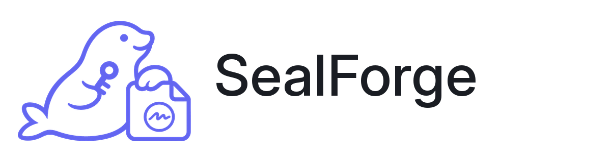
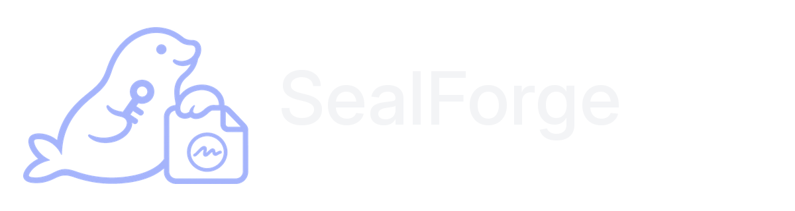
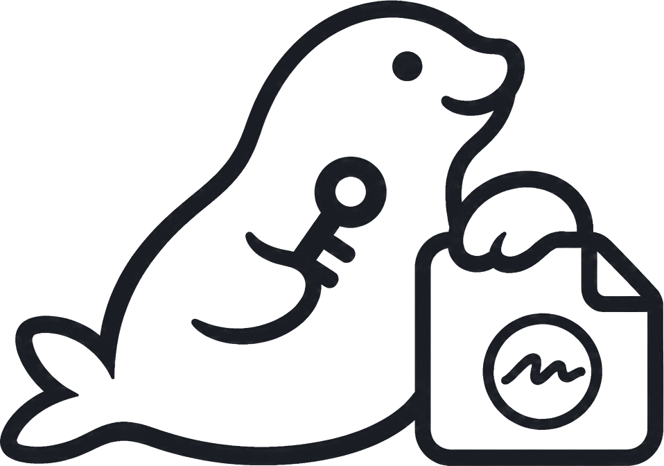
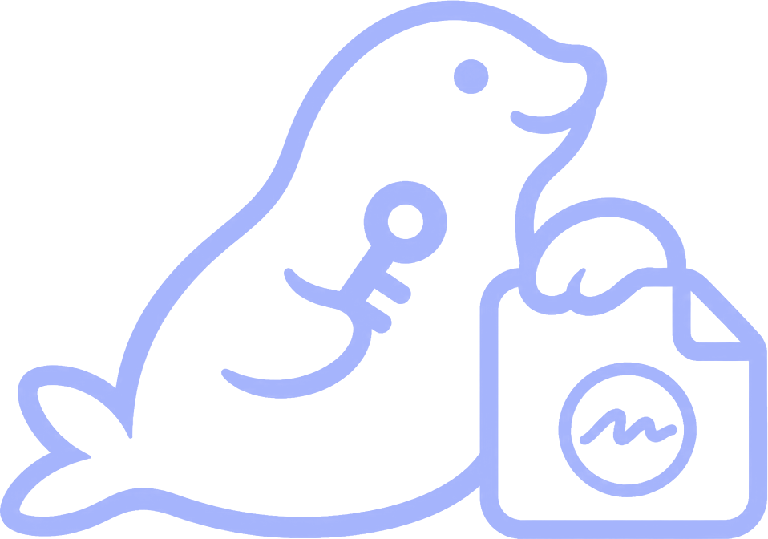
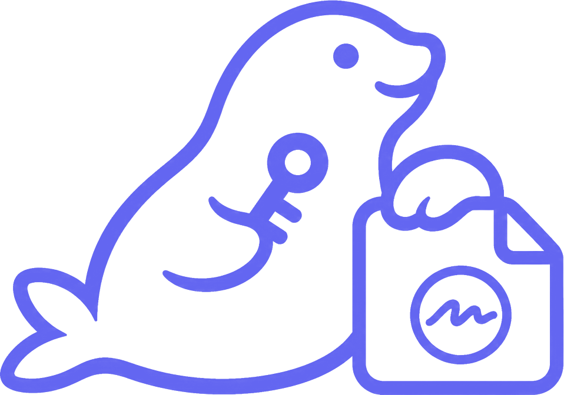
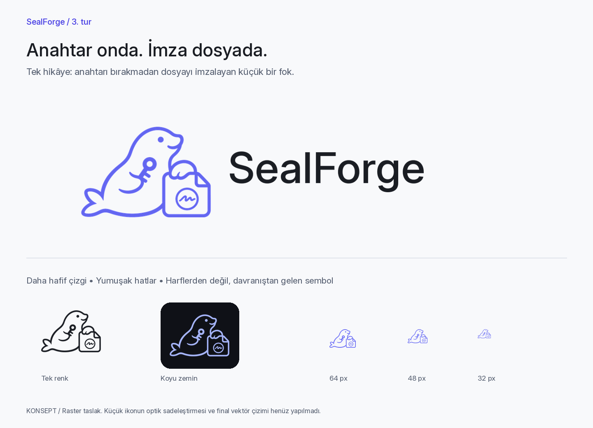

Anahtar, sahibinde.
Fok anahtarı bırakmıyor. Bu, E yönündeki korunan çekirdeğin daha tanıdık ve yumuşak karşılığı.
İmza, dosyada.
Diğer yüzgeç dosyanın üstünde; dosyada bir imza izi var. Bu da D yönündeki kontrollü imzalama hareketi.
Tasarım araştırması / 3. tur / Tek birleşik fikir
İki geometrik şekli birleştirmek yerine tek bir davranış: anahtarı elinde tutarken dosyayı imzalayan küçük bir fok. Korunan anahtar ve dosyaya basılan imza aynı hikâyenin içinde.


Fok anahtarı bırakmıyor. Bu, E yönündeki korunan çekirdeğin daha tanıdık ve yumuşak karşılığı.
Diğer yüzgeç dosyanın üstünde; dosyada bir imza izi var. Bu da D yönündeki kontrollü imzalama hareketi.
Docker referansından aldığım şey hayvan biçimi veya renk değil: tek bakışta tanınan bir karakterin anlaşılır bir iş yapması. Burada balina, konteyner veya harf monogramı yok.



Büyük boyutta anahtar ve imza okunuyor; 32 px'de bu ayrıntılar zayıflıyor. Bu yön seçilirse küçük ikon için ayrıntılar azaltılacak ve çizim vektör olarak yeniden kurulacak. Bu aşama final ikon paketi değil.
